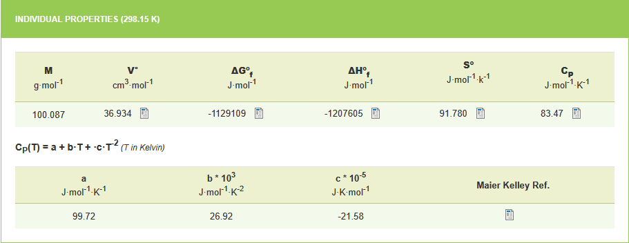
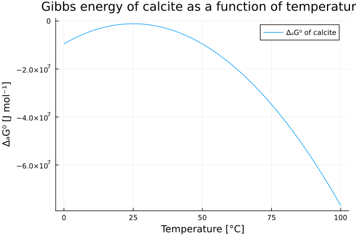
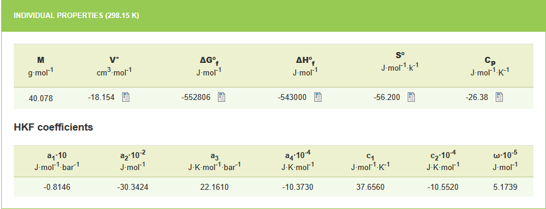
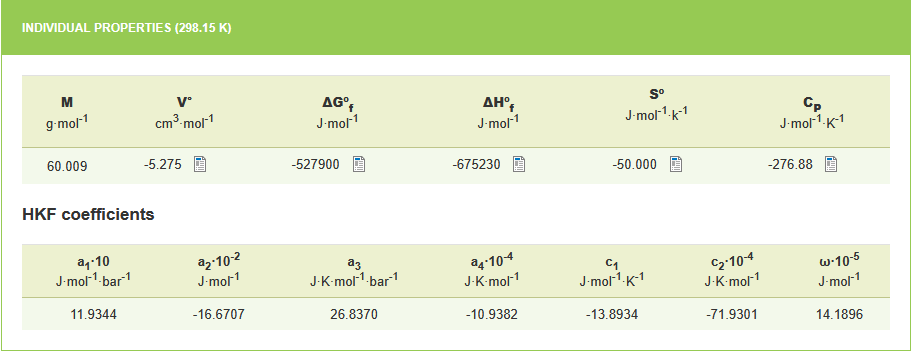
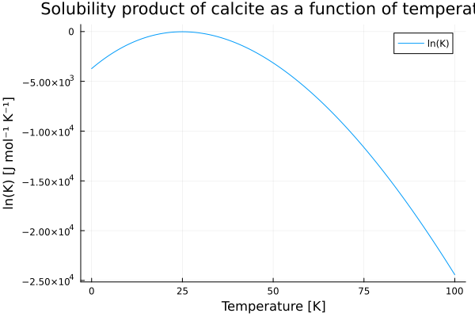

Getting started
This quickstart shows a few common, minimal examples to get you productive with ChemistryLab. It demonstrates creating species, building reactions and generating a stoichiometric matrix.
Simplified example
Let us start with a minimal example in which we compute the thermodynamic properties of a reaction. As a first illustration, we consider the equilibrium of calcite in water. This equilibrium can be written as:
\[CaCO_3 \rightleftharpoons Ca^{2+} + {CO_3}^{2-}\]
It is possible to calculate the thermodynamic properties of the reaction, in particular the solubility constant of the reaction ($\ln K$) which is related to the Gibbs free energy of the reaction ($\Delta_r G^°$). This calculation is performed at a reference temperature of 298 K and at a pressure of 1 Atm using the following equation:
\[\Delta_r G^° = - RT\ln K\]
where $\Delta_r G^°$ is deduced from the Gibbs energies of formation ($\Delta_f {G_i}^°$) of the other chemical species involved in the reaction:
\[\Delta_r G^° = \sum_i \nu_i \Delta_f {G_i}^°\]
First step: species declaration
The first step, therefore, is to construct each of the species present in the reaction. This can be done with the Species function. Its simplest use is as follows:
using ChemistryLab
calcite = Species("CaCO3")
Ca²⁺ = Species("Ca2+")
CO₃²⁻ = Species("CO32-")The created object contains a certain amount of information that can be entered a posteriori (or during the construction of the Species).
CO₃²⁻Species{Int64}
name: CO32-
symbol: CO32-
formula: CO32- ◆ CO₃₂⁻
atoms: C => 1, O => 32
charge: -1
aggregate_state: AS_UNDEF
class: SC_UNDEF
properties: M = 0.5239789998189242 kg mol⁻¹It can be noted that during the construction of the species, a calculation of the molar mass is systematically performed.
Second step: calculation of the thermodynamic properties of each species
For each species, it is possible to assign thermodynamic properties, such as the Gibbs energy of formation or the heat capacity. This data can be found in databases (e.g. thermoddem database). For calcite, the properties are described in the following figure:

To enter data into ChemistrLab, several steps are required.
Thermodynamic properties of formation
The first involves associating the values of the thermodynamic properties of formation for each species.
th_prop_0_calcite = Dict(:Cp⁰ => 83.47, :ΔₐH⁰ => -1207605, :S⁰ => 91.78, :ΔₐG⁰ => -1129109, :V⁰ => 36.934)
th_prop_0_Ca²⁺ = Dict(:Cp⁰ => -26.38, :ΔₐH⁰ => -543000, :S⁰ => -56.2, :ΔₐG⁰ => -552806, :V⁰ => -18.154)
th_prop_0_CO₃²⁻ = Dict(:Cp⁰ => -276.88, :ΔₐH⁰ => -675230, :S⁰ => -50.00, :ΔₐG⁰ => -527900, :V⁰ => -5.275)ChemistryLab uses the DynamicQuantities library to specify the units for each parameter or property to ensure the consistency of the expressions.
Heat capacity, enthalpy and free energy as a function of temperature
The second objective is to describe the evolution of heat capacity as a function of temperature for each species. For calcite, this can be done as follows:
params_Cp_calcite = Dict(:a₀ => 99.72, :a₁ => 26.92e3, :a₂ => -21.58e-5)
T_ref = Dict(:T => 298.15)
params_calcite = merge(th_prop_0_calcite, params_Cp_calcite, T_ref)
dtf_calcite = build_thermo_functions(:cp_ft_equation, params_calcite)In the Thermoddem database, the expression for heat capacity as a function of temperature is written as:
\[C_p(T) = a + b * T + c * T^{-2}\]
The chosen option for populating this expression was to explicitly write the function $C_p(T)$ using the thermo_functions_generic_cp_ft function. However, the expression given in Thermoddem for this species is a simplification of the following more complete function:
\[C_p(T) = a + b * T + c * T^{-2} + d * T^{0.5} + e * T^2\]
Because this expression is implemented in ChemistryLab, another choice could therefore have been the following:
dtf_calcite = thermo_functions_cp_ft_equation(cp_coeffs_calcite, th_prop_0_calcite; ref=[:T => 298.15u"K"])Calling the thermo_functions (here thermo_functions_generic_cp_ft) allows the calculation of the expressions for the different thermodynamic properties as a function of temperature, according to the following expressions:
\[\Delta_a {H^°}_T = \int_{T_{ref}}^T C_p(\tau) d\tau + \Delta_f {H^°}\]
\[{S^°}_T = \int_{T_{ref}}^T \frac{C_p(\tau)}{\tau} d\tau + {S^°}\]
\[\Delta_a {G^°}_T = \int_{T_{ref}}^T C_p(\tau) d\tau - T * \int_{T_{ref}}^T \frac{C_p(\tau)}{\tau} d\tau - (T - T_{ref}){S^°}_{T_{ref}} + \Delta_f G^°\]
where $\Delta_a {H^°}_T$ and $\Delta_a {G^°}_T$ are the apparent enthalpy and free energy (Gibbs) at T.
The expressions for the thermodynamic properties of calcite can be added to the species calcite as follows:
calcite.Cp⁰ = dtf_calcite[:Cp⁰]
calcite.ΔₐH⁰ = dtf_calcite[:ΔₐH⁰]
calcite.S⁰ = dtf_calcite[:S⁰]
calcite.ΔₐG⁰ = dtf_calcite[:ΔₐG⁰]The symbolic expression is computed for each property and writes as follows for Gibbs energy of calcite:
th_prop_0_calcite = Dict(:Cp⁰ => 83.47, :ΔₐH⁰ => -1207605, :S⁰ => 91.78, :ΔₐG⁰ => -1129109, :V⁰ => 36.934)
params_Cp_calcite = Dict(:a₀ => 99.72, :a₁ => 26.92e3, :a₂ => -21.58e-5)
T_ref = Dict(:T => 298.15)
params = merge(th_prop_0_calcite, params_Cp_calcite, T_ref)
dtf_calcite = build_thermo_functions(:cp_ft_equation, params)
calcite.ΔₐG⁰ = dtf_calcite[:ΔₐG⁰]ThermoFunction:
Expression: -1.1976369431610003e9 + 8.026774104344476e6T + 0.0001079 / T - 13460.0(T^2) - 99.72T*log(T)
References: T=298.15
Variables: Tusing Plots
p1 = plot(xlabel="Temperature [°C]", ylabel="ΔₐG⁰ [J mol⁻¹]", title="Gibbs energy of calcite as a function of temperature")
plot!(p1, θ -> calcite.ΔₐG⁰(T = 273.15+θ), 0:0.1:100, label="ΔₐG⁰ of calcite")GKS: cannot open display - headless operation mode active
Similarly, we can provide information on the thermal capacity of species $Ca^{2+}$ and ${CO_3}^{-2}$, as proposed in the thermoddem database:


These new properties are also functions of temperature. However, unlike calcite, the heat capacities of $Ca^{2+}$ and ${CO_3}^{-2}$ as a function of temperature are expressed using the Helgeson-Kirkham-Flowers equation. This equation is not yet implemented in ChemistryLab (see note below). We therefore take the values at 25°C given in Thermoddem, that is -26.38 and -276.88, respectively.
params_Cp_Ca²⁺ = Dict(:a₀ => -26.38)
params_Ca²⁺ = merge(th_prop_0_Ca²⁺, params_Cp_Ca²⁺, T_ref)
dtf_Ca²⁺ = build_thermo_functions(:cp_ft_equation, params_Ca²⁺)
Ca²⁺.ΔₐG⁰ = dtf_Ca²⁺[:ΔₐG⁰]
params_Cp_CO₃²⁻ = Dict(:a₀ => -276.88)
params_CO₃²⁻ = merge(th_prop_0_CO₃²⁻, params_Cp_CO₃²⁻, T_ref)
dtf_CO₃²⁻ = build_thermo_functions(:cp_ft_equation, params_CO₃²⁻)
CO₃²⁻.ΔₐG⁰ = dtf_CO₃²⁻[:ΔₐG⁰]ThermoFunction:
Expression: -460255.728 - 1804.4305786067766T + 276.88T*log(T)
References: T=298.15
Variables: TAlthough the Helgeson-Kirkham-Flowers equation is not implemented, the expressions for enthalpies and free energies are temperature-dependent due to the integration performed on Cp. Furthermore, within the temperature and pressure ranges currently tested in ChemistryLab, assuming a constant temperature for Cp has little impact on the solubility product of a reaction.
Third step: writing the reaction
Now we can write the dissolution/precipitation reaction of calcite.
r = calcite ↔ Ca²⁺ + CO₃²⁻ equation: CaCO₃ ↔ Ca₂⁺ + CO₃₂⁻
reactants: CaCO₃ => 1
products: Ca₂⁺ => 1, CO₃₂⁻ => 1
charge: 0
properties: ΔᵣG⁰ = 1.1966149906000004e9 - 8.02869901752444e6T + -0.0001079 / T + 13460.0(T^2) + 402.98T*log(T) ◆ T=298.15
logK⁰ = (0.0001079 - 1.1966149906000004e9T + 8.02869901752444e6(T^2) - 402.98(T^2)*log(T) - 13460.0T*(T^2)) / (19.144757680815896(T^2)) ◆ T=298.15and deduce the solubility product as a function of temperature as expressed below:
\[RT \; ln(K) = - \Delta_r G^° = - \sum_i \nu_i \Delta_f {G^°}_i\]
T = ThermoFunction(:T)
R = 8.314411 #"J/K/mol"
lnK = -(Ca²⁺.ΔₐG⁰ + CO₃²⁻.ΔₐG⁰ - calcite.ΔₐG⁰) / (R*T)ThermoFunction:
Expression: (0.0001079 - 1.1966149906000001e9T + 8.02869901752444e6(T^2) - 402.98(T^2)*log(T) - 13460.0T*(T^2)) / (8.314411(T^2))
References: T=298.15
Variables: Tusing Plots
p1 = plot(xlabel="Temperature [K]", ylabel="ln(K) [J mol⁻¹ K⁻¹]", title="Solubility product of calcite as a function of temperature")
plot!(p1, θ -> lnK(T = 273.15+θ), 0:0.1:100, label="ln(K)")
Comparison with data extracted from database
Some databases provide solubility products for reactions. This is the case for Cemdata (cemdata) or Thermoddem (thermoddem) in various formats.
df_elements, df_substances, df_reactions = read_thermofun_database("data/cemdata18-merged.json")
df_calcite = get_compatible_species(split("Cal H2O@ CO2"), df_substances;
aggregate_states=[AS_AQUEOUS], exclude_species=split("H2@ O2@ CH4@"), union=true)
dict_species_calcite = build_species_from_database(df_calcite)
primaries = [dict_species_calcite[s] for s in split("H2O@ H+ CO3-2 Ca+2")]
SM = StoichMatrix(values(dict_species_calcite), primaries); pprint(SM)
list_reactions = reactions(SM) ; pprint(list_reactions)
for r in list_reactions display(r); println() end
dict_reactions_calcite = Dict(r.symbol => r for r in list_reactions)
Notes and next steps
- The
Formula,Species,ReactionandStoichMatrixAPIs are intentionally small and composable — explore thedocs/src/pages for detailed examples. - For cement-specific workflows, use
CemSpeciesand thedatabasesutilities to convert between oxide- and atom-based representations.
Now try the quickstart examples interactively in the REPL and then follow the next pages of the tutorial for deeper coverage.
cpcoeffscalcite = [:a => 99.72u"J/K/mol", :b => 26.92e3u"J/mol/K^2", :c => -21.58e-5u"J*K/mol"] Cpexprcalcite = :(a + b * T + c / T^2)
calcite.properties = thermofunctionsgenericcpft(Cpexprcalcite, cpcoeffscalcite, thprop0_calcite; ref=[:T => 298.15u"K"])
Cpexprcalcite = :(α + β * T + γ / T^2) factory = ThermoFactory(Cpexprcalcite, [:T]) params = (α=210.0, β=0.0, γ=-3.07e6, T=298.15) calcite.Cp⁰ = factory(; params...)